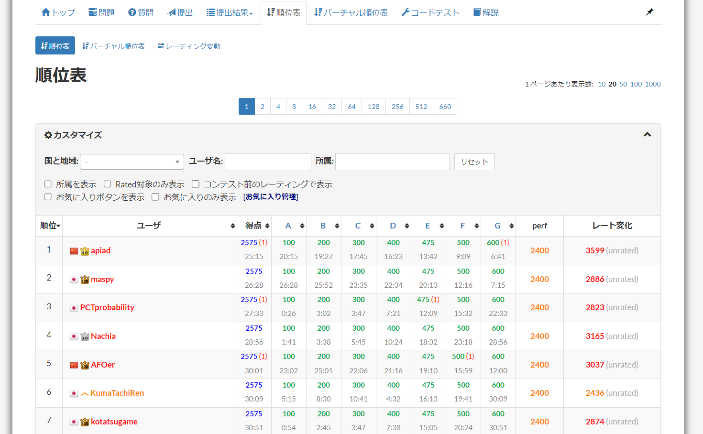
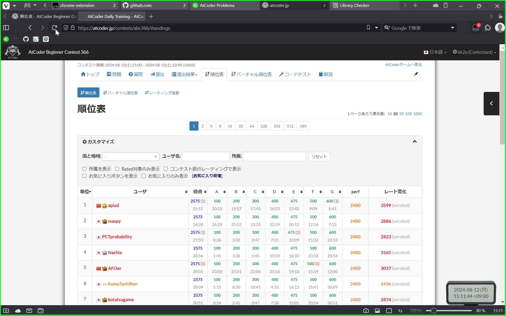
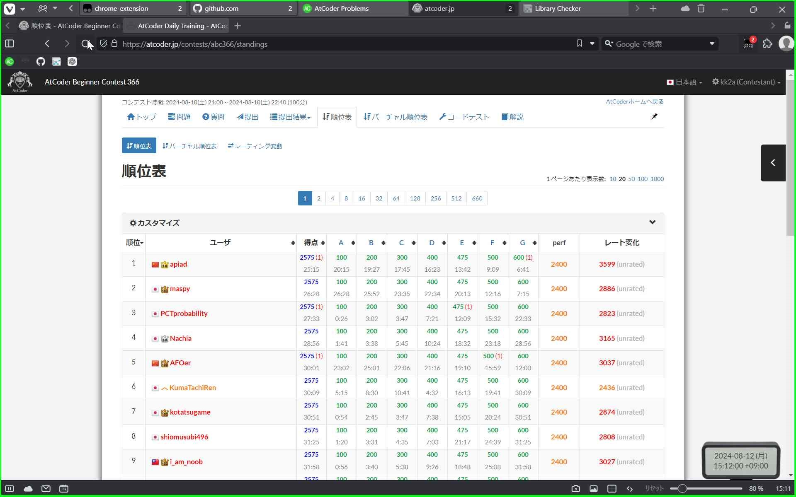

はじめに
競技プログラミングをしているときに，ユーザースクリプトのありがたみをよく感じます．例えば，AtCoderのコンテスト中に，その時点でのパフォーマンスを見えるようにするスクリプトは，そのコンテストでの立ち回りが大きく変わることになるのでかなり重宝しています．
ここでは，順位表の「カスタマイズ」の折り畳みが邪魔だなと思ったので，折り畳みを消し去るようなスクリプトを作り，その作成過程をまとめて次作りたくなったらいこうと思います．
この記事に関連するファイルなどは，ここからすべて見ることができます．
スクリプトの解説
たいしたことないので，コメントを読めばいいです．基本的には，htmlとのにらめっこでした．atcoder-customize-panel-autoexpand.js
// ==UserScript==
// @name AtCoder Customize Panel Auto-Expand
// @namespace http://tampermonkey.net/
// @version 0.3
// @description Always expand the "Customize" panelAtCoder standings page at initial load
// @author kk2a
// @match https://atcoder.jp/contests/*/standings*
// @grant none
// ==/UserScript==
(function() {
'use strict';
// ページが完全にロードされた際に実行
window.addEventListener('load', () => {
// 遅延を設定して確実にDOMがロードされるのを待つ
setTimeout(() => {
// 順位表カスタマイズパネルの親要素を取得
const panelHeading = document.getElement('standings-panel-heading');
// カスタマイズパネルは存在するか？
if (panelHeading) {
// トリガーボタン（見出し部分）を取得
const toggleButton = panelHeadquerySelector('#standings-heading-div');
// トリガーボタンは存在するか？
if (toggleButton) {
// クリックイベントをシミュレーネルを展開
toggleButton.click();
}
}
}, 1000); // 1秒待ってから実行
});
})(); 実行結果
通常時
スクリプトを実行していないときは，折り畳みを解除した状態でもリロードすると元に戻ってしまいます． スクリプトを実行しているとき
スクリプトを実行すると，折り畳みが解除されます． おわりに
今回は，AtCoderの順位表のカスタマイズパネルを自動で展開するスクリプトを作成しました．ユーザスクリプトは，前から自作したいなとは思っていたのですが，自分が欲しいなと思った機能はすでに実装されていてたので，今回のような小さなスクリプトを作成することにしました．
コンテスト中はちょっともたつくだけで，嫌な気分になるのでこういう小さいことでも結構得をすると思っています．
ありがとうございました．
補遺
- ユーザースクリプトの実行は，Tampermonkeyを使用しました．
- 作成したユーザースクリプトをGreasy Forkなどで公開し，どの人も簡単にダウンロードできるようにすることもできましたが，あまりにも規模が小さいのでこのスクリプトをGreasy Forkで公開はしていません．
- 本コンテンツ作成時間: 約8時間